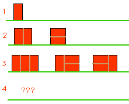

Problem A
Brick Wall Patterns
If we want to build a brick wall out of the usual size of brick which
has a length twice as long as its height, and if our wall is to be two
units tall, we can make our wall in a number of patterns, depending on
how long we want it. From the figure one observe that:

- There is just one wall pattern which is 1 unit wide - made by
putting the brick on its end.
- There are 2 patterns for a wall of length 2: two side-ways
bricks laid on top of each other and two bricks long-ways up put next
to each other.
- There are three patterns for walls of length 3.
How many patterns can you find for a wall of length 4? And, for a wall
of length 5?
Problem
Your task is to write a program that given the length of a wall,
determines how many patterns there may be for a wall of that length.
Intput
Your program receives a sequence of positive integers, one per line,
each representing the length of a wall. The maximum value for the wall
is length 50. The input terminates with a 0.
Output
For each wall length given in the input, your program must output the
corresponding number of different patterns for such a wall in a
separate line.
Sample Intput
1
2
3
0
Sample Output
1
2
3
Fernando Silva, CPUP'2003 Round 1
Concurso de Programação da Universidade do Porto